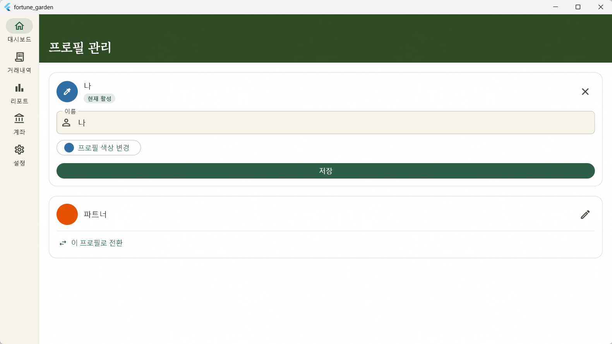
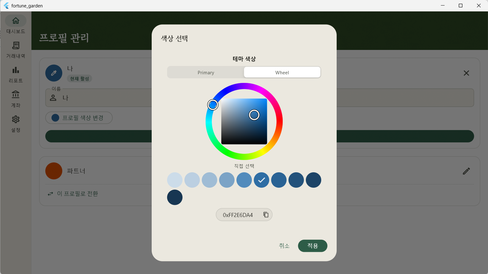

Overview
01. 작업 개요 및 점검
Fortune Garden 가계부의 핵심 도메인인 '프로필'의 관리 화면을 디자인 시스템 v1.1 규격에 맞춰 재설계하고 누락된 기능을 보완했습니다.
| 항목 | 상태 | 비고 |
|---|---|---|
| 프로필 목록 로드 및 수정 | ✅ 완료 | - |
| 활성 프로필 표시 및 전환 | ✅ 완료 | 전환 시 Provider 무효화 처리 |
| 색상 피커 고도화 | ✅ 완료 | flex_color_picker 다이얼로그 연동 |
| 디자인 가이드라인 적용 | ✅ 완료 | GrainOverlay 및 헤더 배경색 적용 |
| Provider 버그 수정 | ✅ 완료 | ref.read → ref.watch 교체 |
Feature Update
02. 변경 사항 및 기능 추가

2.1. 활성 프로필 관리
현재 사용 중인 프로필을 시각적으로 구분하고, 원클릭으로 활성 프로필을 전환할 수 있는 기능을 추가했습니다.
// 활성 프로필 전환 로직 Future<void> _switchProfile() async { await ref.read(profileUseCaseProvider).switchProfile(widget.profile.id); ref.invalidate(activeProfileProvider); ref.invalidate(_profilesProvider); }
2.2. 버그 수정: Provider 반응성 확보
_profilesProvider가 ref.read로 작성되어
데이터 변경 시 화면이 갱신되지 않던 문제를 ref.watch로
수정하여 해결했습니다.
// 변경 후 (반응성 확보) final _profilesProvider = FutureProvider.autoDispose<List<Profile>>( (ref) => ref.watch(profileUseCaseProvider).getAll(), );
Design System
03. 디자인 시스템 적용

- 확장형 헤더: SliverAppBar와 FlexibleSpaceBar를 조합하여 구성했습니다. 배경색은 로컬 상수를 사용하여 일관성을 유지합니다.
-
폰트 스타일 교정: 전역
appBarTheme에 설정된 이탤릭 스타일이 상속되지 않도록 Newsreader 폰트를 직접 지정하고FontStyle.normal을 적용했습니다. - GrainOverlay: Scaffold 본문에 투명도 0.04의 텍스처 오버레이를 적용하여 깊이감을 부여했습니다.
Architecture
04. Provider 의존 관계
화면 진입 및 데이터 조작 시 관련 상태가 유기적으로 갱신되도록 설계되었습니다.
-
ProfilesScreen:
_profilesProvider및activeProfileProvider를 관찰합니다. -
State Invalidation: 프로필 저장(upsert) 또는
전환(switch) 액션이 발생하면
ref.invalidate를 호출하여 전체 UI 동기화를 수행합니다.
Pending
05. 미해결 및 향후 작업
-
생성일 보존 이슈: 현재
ProfileUseCase.upsert()호출 시 매번DateTime.now()로createdAt이 초기화되어 기존 생성 정보가 유실됩니다. 수정 시 기존 날짜를 유지하는 로직으로 UseCase 레이어 보완이 필요합니다.
Comments